Generated by scripts/compare_meta_to_benchmark.py.
| run | run_dir | manual_meta | aggregate_rows | |
|---|---|---|---|---|
| 0 | v2-annotation-only | /home/zorro/repos/autonima-results/projects/emotion_regulation_2022/v2-annotation-only | False | all_analyses |
| 1 | v4-annotation-only | /home/zorro/repos/autonima-results/projects/emotion_regulation_2022/v4-annotation-only | False | all_analyses, all_studies, all_abstract |
No rows.
| manual_name | auto_name | manual_exists | run::v2-annotation-only | run::v4-annotation-only | |
|---|---|---|---|---|---|
| 0 | decrease | decrease | True | True | True |
| 1 | increase | increase | True | True | True |
| 2 | maintain | maintain | True | True | True |
| 3 | reappraisal | reappraisal | True | True | True |
Counts are computed from each run's nimads_annotation.json and PMID-linked through nimads_studyset.json. Includes mapped annotations and all* annotations.
| run | manual_name | auto_name | n_analyses | n_unique_pmids | is_mapped | |
|---|---|---|---|---|---|---|
| 0 | v2-annotation-only | decrease | decrease | 150 | 45 | True |
| 1 | v4-annotation-only | decrease | decrease | 161 | 54 | True |
| 2 | v2-annotation-only | increase | increase | 31 | 10 | True |
| 3 | v4-annotation-only | increase | increase | 20 | 9 | True |
| 4 | v2-annotation-only | maintain | maintain | 55 | 24 | True |
| 5 | v4-annotation-only | maintain | maintain | 98 | 38 | True |
| 6 | v2-annotation-only | reappraisal | reappraisal | 151 | 45 | True |
| 7 | v4-annotation-only | reappraisal | reappraisal | 174 | 57 | True |
| 8 | v2-annotation-only | all_analyses | 364 | 48 | False | |
| 9 | v4-annotation-only | all_analyses | 458 | 64 | False | |
| 10 | v4-annotation-only | all_abstract | 333 | 46 | False | |
| 11 | v4-annotation-only | all_studies | 333 | 46 | False |
| run | v2-annotation-only | v4-annotation-only |
|---|---|---|
| auto_name | ||
| decrease | 150.0 | 161.0 |
| increase | 31.0 | 20.0 |
| maintain | 55.0 | 98.0 |
| reappraisal | 151.0 | 174.0 |
| all_analyses | 364.0 | 458.0 |
| all_abstract | NaN | 333.0 |
| all_studies | NaN | 333.0 |
| run | v2-annotation-only | v4-annotation-only |
|---|---|---|
| auto_name | ||
| decrease | 45.0 | 54.0 |
| increase | 10.0 | 9.0 |
| maintain | 24.0 | 38.0 |
| reappraisal | 45.0 | 57.0 |
| all_analyses | 48.0 | 64.0 |
| all_abstract | NaN | 46.0 |
| all_studies | NaN | 46.0 |
| project | annotation | n_analyses | n_unique_pmids | is_dataset_total | annotation_path | studyset_path | |
|---|---|---|---|---|---|---|---|
| 0 | emotion_regulation_2022 | decrease | 128 | 86 | False | /home/zorro/repos/neurometabench/data/nimads/emotion_regulation_2022/merged/nimads_annotation.json | /home/zorro/repos/neurometabench/data/nimads/emotion_regulation_2022/merged/nimads_studyset.json |
| 1 | emotion_regulation_2022 | increase | 24 | 18 | False | /home/zorro/repos/neurometabench/data/nimads/emotion_regulation_2022/merged/nimads_annotation.json | /home/zorro/repos/neurometabench/data/nimads/emotion_regulation_2022/merged/nimads_studyset.json |
| 2 | emotion_regulation_2022 | maintain | 94 | 59 | False | /home/zorro/repos/neurometabench/data/nimads/emotion_regulation_2022/merged/nimads_annotation.json | /home/zorro/repos/neurometabench/data/nimads/emotion_regulation_2022/merged/nimads_studyset.json |
| 3 | emotion_regulation_2022 | reappraisal | 154 | 88 | False | /home/zorro/repos/neurometabench/data/nimads/emotion_regulation_2022/merged/nimads_annotation.json | /home/zorro/repos/neurometabench/data/nimads/emotion_regulation_2022/merged/nimads_studyset.json |
| 4 | emotion_regulation_2022 | __dataset_total__ | 248 | 90 | True | /home/zorro/repos/neurometabench/data/nimads/emotion_regulation_2022/merged/nimads_annotation.json | /home/zorro/repos/neurometabench/data/nimads/emotion_regulation_2022/merged/nimads_studyset.json |
| n_rows | n_cols | dice_mean_full | dice_mean_diagonal | pearson_mean_full | pearson_mean_diagonal | |
|---|---|---|---|---|---|---|
| run | ||||||
| v2-annotation-only | 5 | 4 | 0.356 | 0.603 | 0.520 | 0.787 |
| v4-annotation-only | 7 | 4 | 0.356 | 0.624 | 0.536 | 0.826 |
| run | v2-annotation-only | v4-annotation-only |
|---|---|---|
| auto_name | ||
| decrease | 0.735 | 0.724 |
| increase | 0.485 | 0.529 |
| maintain | 0.473 | 0.501 |
| reappraisal | 0.720 | 0.744 |
| run | v2-annotation-only | v4-annotation-only |
|---|---|---|
| auto_name | ||
| decrease | 0.875 | 0.883 |
| increase | 0.696 | 0.755 |
| maintain | 0.694 | 0.769 |
| reappraisal | 0.883 | 0.899 |
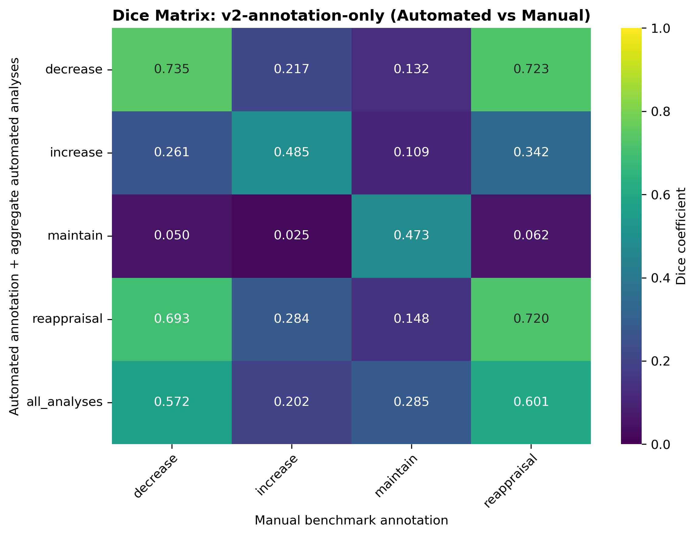
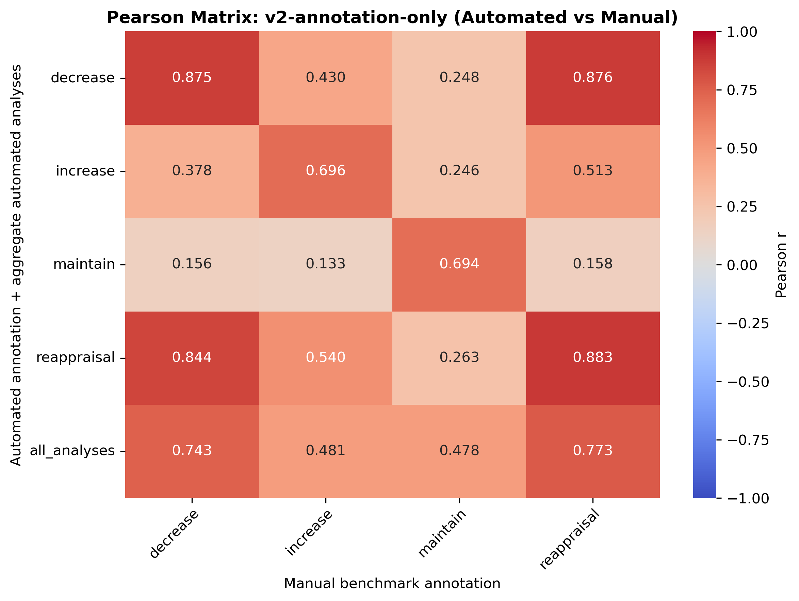
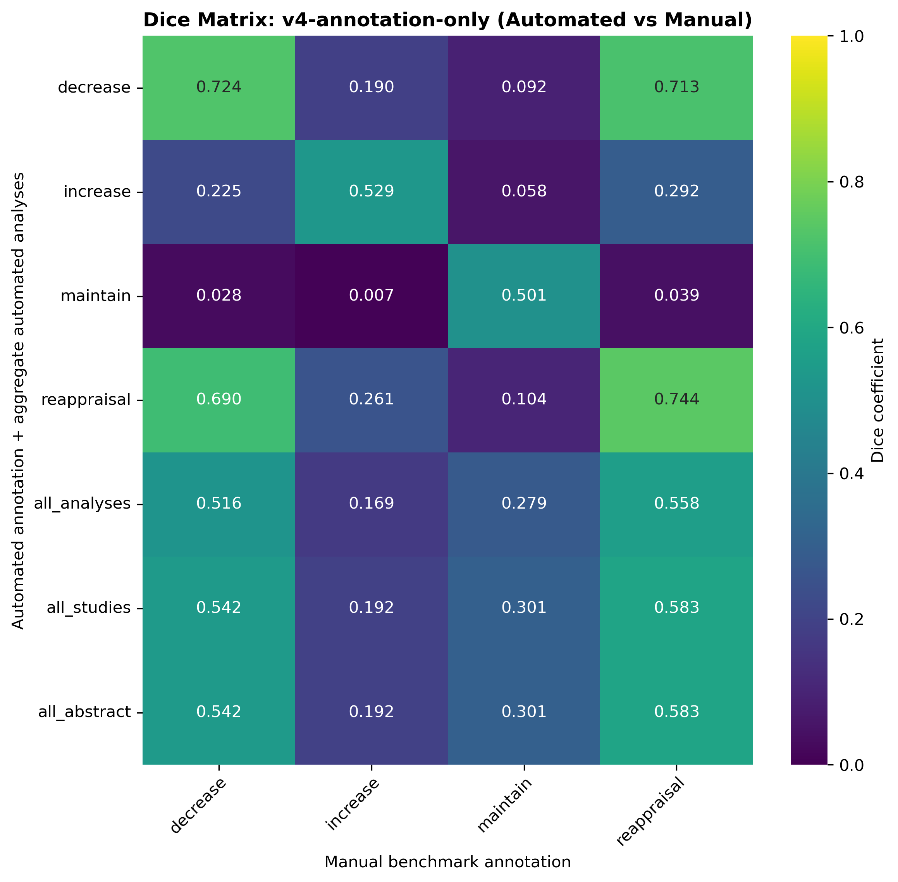
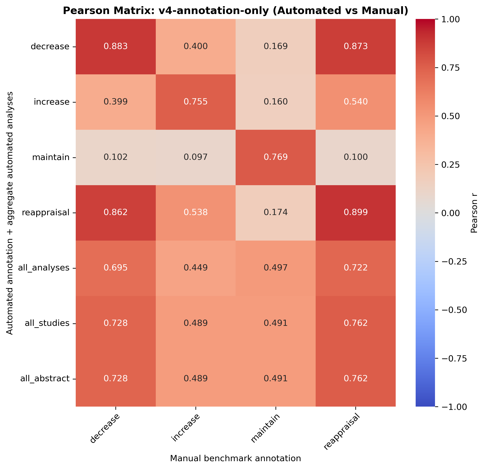
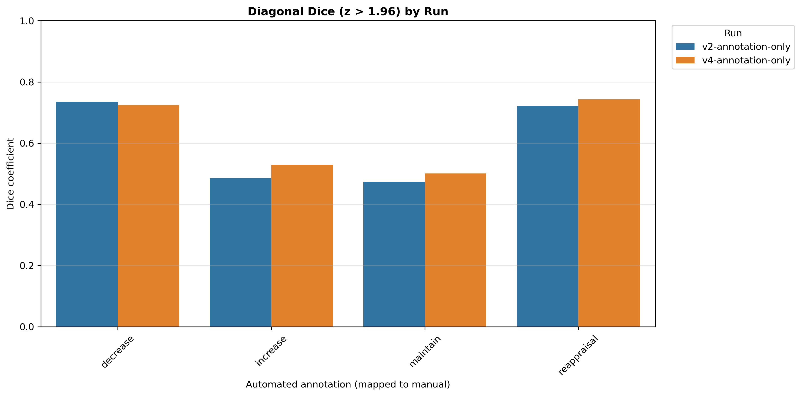
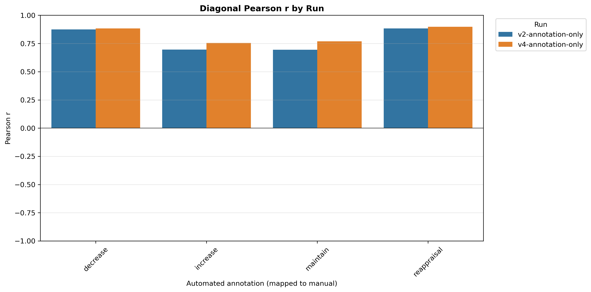
Ordered as manual benchmark first, then each automated run. Includes only all_analyses and mapped custom annotations.
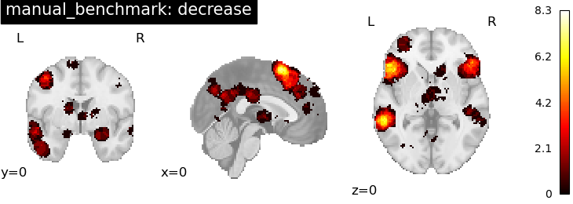
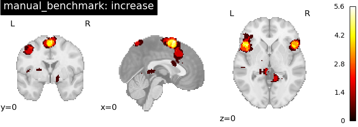
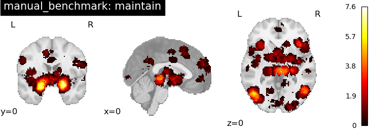
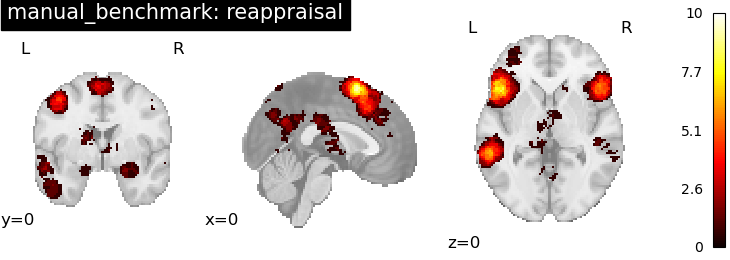
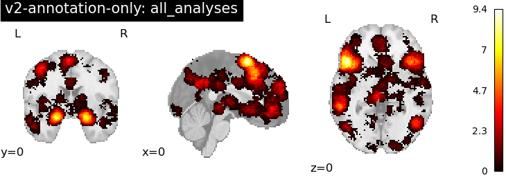
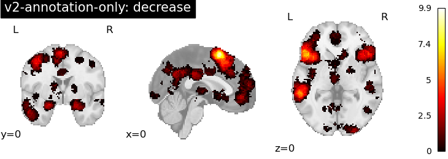
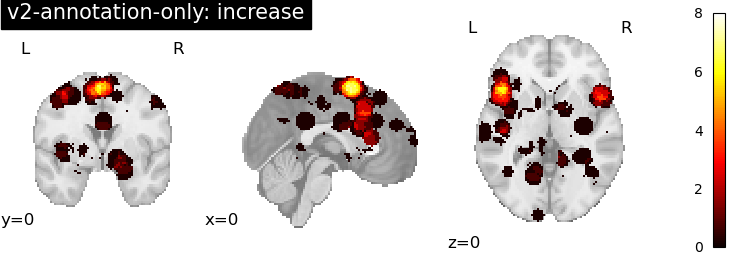
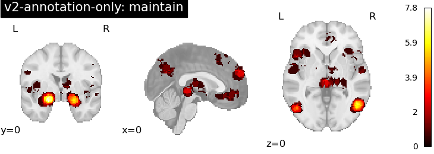
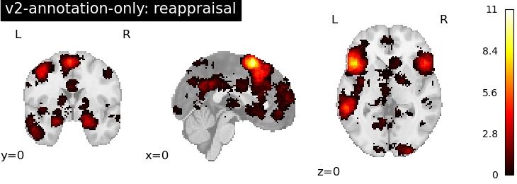
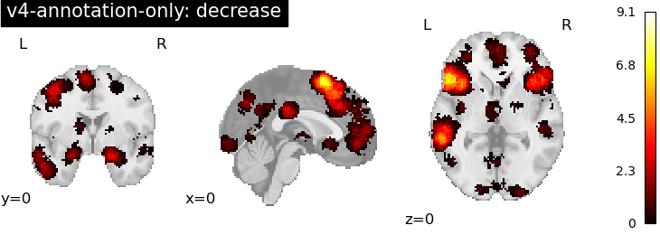
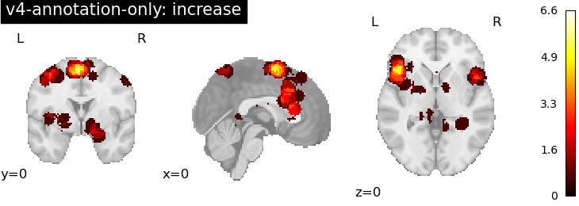
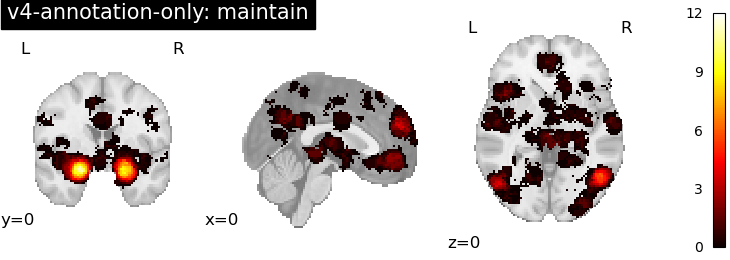
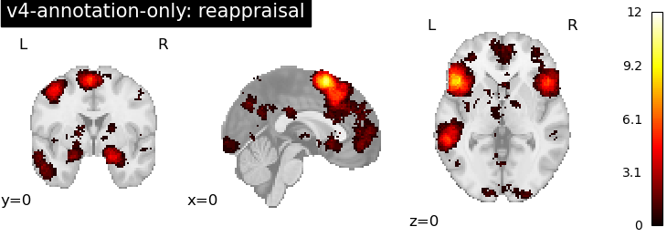